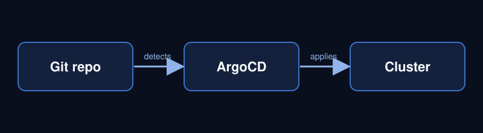

Professional experience
-
Senior DevOps / Infrastructure Engineer, Shoplift
Google Cloud, Kubernetes
I operate the production, development and platform clusters on Google Kubernetes Engine. I run regular healthchecks, keep deployments in sync through GitOps, and manage secrets safely from a central store.
-
Cloud Support Engineer, CR Software
Amazon Web Services
I support enterprise customers running on AWS container services. A typical task is collecting and analysing thread dumps from ECS nodes to find stuck or slow Java processes.
How a change reaches production

Learn more about the tool behind this flow in the ArgoCD documentation.
Education
-
Fundamentals of Web Development
Illinois Institute of Technology, in progress
HTML, CSS and JavaScript from first principles.